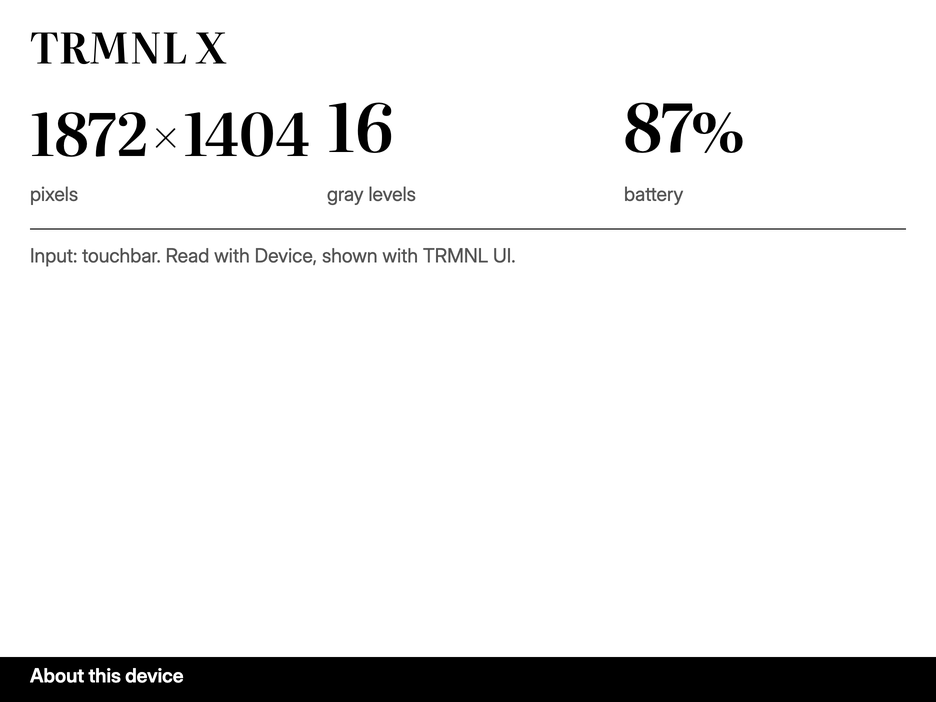
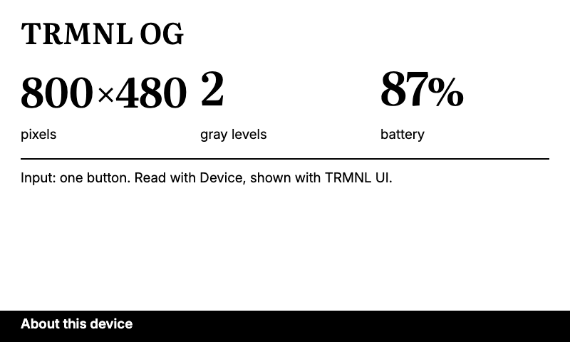

Overview
App API v1 is the boundary between an app and the firmware. An app is a WebAssembly module: it can call the functions of four modules and nothing else, so it cannot touch flash, the radio, the watchdog or the panel.
| Module | What it gives an app | Pages |
|---|---|---|
trmnl_sys_v1 | the device's data, the log, leaving the app, the buzzer | Device, Log, Session, Buzzer |
trmnl_kv_v1 | small values that survive everything but an uninstall | KV |
trmnl_files_v1 | files the user uploads from the phone, in the app's own folder | Files |
trmnl_ui_v1 | the screen: a TRMNL UI tree, rendered by the firmware | render(_:_:) |
There is no drawing API. Apps describe screens with TRMNL UI components only, so every app looks like TRMNL on every device.
// Name: About this device import { App, View, Layout, Title, Row, Value, Divider, Description, TitleBar, Device, Model, register } from "./trmnl-ui"; export { trmnl_event } from "./trmnl-ui"; class About extends App { body(): View { const name = Device.model() == Model.X ? "TRMNL X" : "TRMNL OG"; const input = Device.hasTouchbar() ? "touchbar" : "one button"; return Layout([ Title(name), Row([ Value(Device.width().toString() + "×" + Device.height().toString(), "pixels"), Value(Device.depth() == 4 ? "16" : "2", "gray levels"), Value(Device.battery().toString() + "%", "battery"), ]), Divider(), Description("Input: " + input + ". Read with Device, shown with TRMNL UI."), TitleBar("About this device"), ]); } } register(new About());


Device data shown with TRMNL UI.
Topics
Lifecycle
LaunchReasonWhy the app was started.
SuspendReasonWhy the app is being closed.
register(_:)Tells the firmware which app object to call.
Device data
DeviceWhat the device tells an app about itself. Read-only.
Input
InputEventThe one press of a wake.
Storage
KVSmall values that survive sleep, resets, relaunches and updates.
FilesFiles the user uploads from the phone, such as books.
Screen
render(_:_:)Shows a TRMNL UI tree on the screen. The only way an app draws.
Feedback and session
LogLines for the developer, sent at the next check-in.
SessionLeaves the app.
BuzzerA short sound, on devices that have a buzzer.
Languages
The same app in AssemblyScript, C, Rust, Zig, Go and Swift.
Interface and limits
What the WebAssembly module imports and exports, for any language.
What the runtime enforces for every app.
Designed, not yet in this preview.